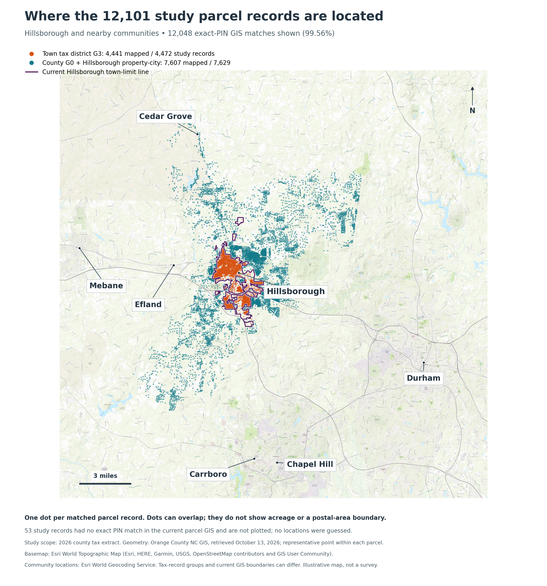
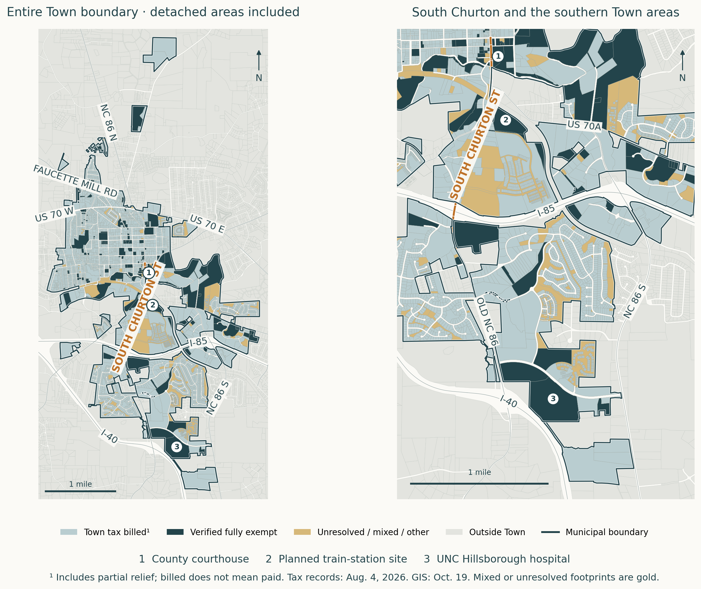
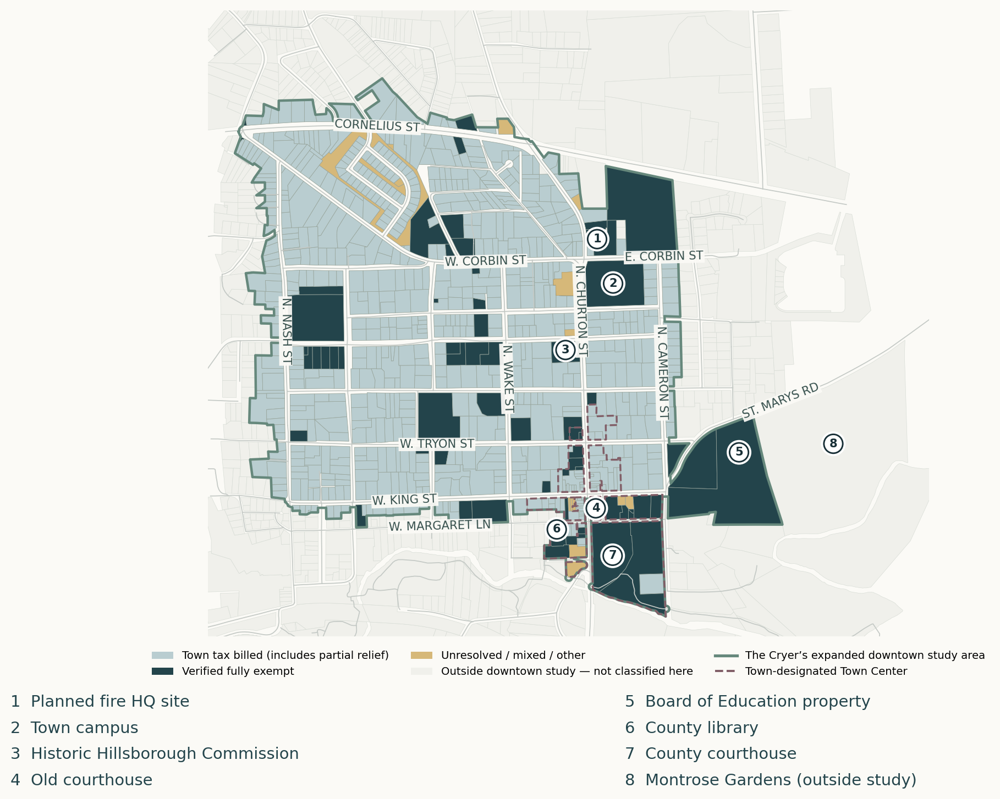

The Cryer / Town LedgerWho Pays · review preview v7 · 19 October 2026 · Reviewer release v4
One place. Different tax boundaries.
A Hillsborough address does not necessarily mean a property is inside Town limits.
4,472Town property tax records 40.3% of combined appraisal
7,629Outside Town, Hillsborough address 59.7% of combined appraisal
12,101Combined property tax records $6,587.7M appraised value

Regional geographic overview — colors here show tax jurisdiction, not exemption status. Orange: Town records.Teal: County/Hillsborough-address records. Purple line: Town boundary. Saved map reports 12,048 of 12,101 records mapped. Data notes → · Open full-size map →
1 / Boundaries determine Town-tax applicability.Properties outside Town still pay applicable County and other taxes. Their absence from the Town tax base is not a Town exemption.
Town property tax records
4,124 with Town tax billed.183 verified fully exempt; 5 utilities unresolved. 160 released-only records are also unresolved/other.
Town property tax billed: $11.1M. Billed amounts are not collections. See data notes →
The Cryer / Town LedgerWho Pays · review preview v7 · 19 October 2026 · Reviewer release v4
Who pays within the Town line.
Town tax billed in blue-gray. Verified fully exempt in dark teal. Unresolved or mixed footprints in gold.

Official County GIS, retrieved October 19, 2026. The full boundary is shown; 4,441 of 4,472 saved Town tax records have exact parcel matches. The remaining 31 are disclosed in References. Open full-size map →The Cryer / Town LedgerWho Pays · review preview v7 · 19 October 2026 · Reviewer release v4
Nearly a quarter of the downtown study’s value is fully exempt.
The Cryer’s custom downtown study covers 805 property tax records. The 24.4% share applies to this study area only, not the whole Town or an official district.
$457.1MKnown appraised value 802 matched records
24.4%Fully exempt $111.6M in appraised value
20.3%Government / public $92.8M in appraised value

Map 3. The Cryer’s expanded downtown study area, with the Town-designated Town Center (official future-land-use area) for comparison. The tax-treatment colors match the municipal map. Government is included in the fully exempt total. Numbered markers identify the parcels listed below the map. The fire headquarters is a planned site.
2 / Exemptions narrow the Town tax base.Government and public bodies hold most of downtown’s fully exempt property value.
3 / Land use affects future growth opportunities.Government-occupied sites along Churton and elsewhere are unavailable for commercial development while in that use. Future uses can change; public sites also provide public services.